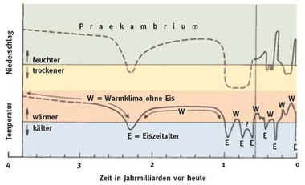

Abgeschmolzene Polkappen – Das kennen wir doch.
Ich möchte mal etwas zum Nachdenken anregen und die Hysterie im Bezug auf die globale Erwärmung eingehend vertiefen. Es ist keinesfalls wissenschaftlicher Konsens, dass die globale Erwärmung nur durch den Menschen verursacht wird - das ist bekannt. Ich möchte die Argumente der beiden Seiten nicht weiter ausführen.
Es besteht allerdings ein breiter Konsens, dass es in der Erdgeschichte viele Phasen gegeben hat in denen die Polkappen komplett eisfrei waren. Weiterhin können menschliche Einflüsse mit hoher Wahrscheinlichkeit nicht die nächste Warmzeit aufhalten. Ich möchte dem werten Leser folgende interessante Grafik nicht vorenthalten:

Wie nach eingehender Betrachtung sehr deutlich zu erkennen ist, sind Zeiten in denen der Stoff für Filme, wie Titanic gemacht wird, eher eine Ausnahme und die Zeiten herrlich hoher badetauglicher Meeresspiegel und beindruckender Fata-Morganas die Regel.
Die menschliche Rasse wird, falls sie eine globale Erwärmung verhindern möchte, Wege finden müssen die Erde wieder abzukühlen. Die Vorschläge, die bisher in der öffentlichen Diskussion auftauchen sind völliger Blödsinn und werden viel zu lange brauchen um erfolgreich zu sein. Das unvermeidliche werden sie trotzdem nicht so einfach aufhalten können.
Im Gegensatz zu diesen unausgegorenen Vorschlägen haben aber renommierte Forscherteam folgende Ideen schon seit Jahrzehnten in petto. ((Quelle "Was ist Was? - Band 15 - Dinosaurier"))
Meteoriten manipulieren:
Lenke einen Riesenmeteor oder zumindest ein riesiges Splitterstück auf die Erde und du schlägst 2 Probleme mit einer Klappe:
1. Abbau unnötiger Überbevölkerung
2. Riesige Mengen Staub werden freigesetzt
Daraus folgt, dass sowohl weniger Treibhausgase freigesetzt werden, als auch das Klima endlich wieder angenehmer wird.
Künstliche Vulkanausbrüche:
Einfach an Schwachstellen der Erdkruste mit geeigneten Mitteln zahlreiche Vulkanausbrüche erzeugen. Warum nicht aus den Erfahrungen der Vergangenheit lernen?
Schlussfolgerungen
Ich bin mir sicher, einer der beiden Vorschläge ist praktikabel. Aber mal im Ernst: Die Diskussion um die globale Erwärmung wird von vielen Interessengruppen instrumentalisiert. Es wird eine seltene Hysterie erzeugt und Geld damit verdient. Nicht zuletzt ärmeren Staaten werden harte Auflagen gemacht. Stattdessen sollten wir dem Problem ins Auge schauen: Früher oder später wird es zu einer Warmzeit kommen - anthropogene Einflüsse hin oder her.
Der Mensch, wird sich wie alle Tiere unter den veränderten Bedingungen beweisen müssen. Ich denke unsere Intelligenz könnte ein Vorteil sein, um sich geänderten klimatische Bedingungen anzupassen und gegebenenfalls über einen Auszug nachzudenken, wenn wir das Meeresrauschen an der Haustür hören.
CO2 Ausstoß ist nur ein winziges Puzzlestück der globalen Erwährmung und wird vollkommen überbewertet.
Auch das Aussterben von Arten, oder die Verlagerung ihres Lebensraumes ausschließlich des Klimas wegen, ist völlig normal. Naturschützer und Politik sollten sich daher, bevor sie das Modethema Klimaschutz angehen, erstmal um Probleme wie Überbevölkerung, Abholzung von Regenwäldern, fatale Düngemethoden in der Landwirtschaft oder uneinheitliche Regeln in der Genforschung kümmern, um nur wenige Dinge zu nennen, die heißer sind als Klimaschutz, die aber niemand anfassen möchte. Als Beispiel möchte ich nur mal erwähnen, das riesige Teile der Ostsee sich in einen Friedhof verwandelt haben, weil der Stickstoffeintrag zu hoch ist. Ich bin mir sicher, dass dadurch die Artenvielfalt wesentlich stärker gefährdet ist. Auch Patente auf Dinge, die kein Mensch erfunden hat, sondern die Natur selbst - z.B. DNA-Sequenzen, natürliche Substanzen oder gar Zellen - sollten wir stark überdenken.
Es wird in diesem Zusammenhang auch von vielen Menschen als tragisch angesehen, wenn bestimmte Bereiche der Erde unbewohnbar werden. Ich möchte um das zu relativieren einfach auf die mehrere dutzende Meter mächtige Decke aus Eis und Geröll verweisen, die vor etwa 10.000 Jahren über Nordeuropa und Skandinavien gelegen hat.
10 Kommentare zu "Abgeschmolzene Polkappen – Das kennen wir doch."
- Externe Links im selben Fenster öffnen
- Externe Links in neuem Fenster öffnen
Rick
Noch ein guter Aufsatz, Red Baron, der ebenso wie der Pflege/Generationen-Aufsatz sehr durch seine Distanz von Mainstream-Positionen und durch die Ausgewogenheit gewinnt, gratuliere.
P.S:
Frage nebenbei - ist dzt der Phase 5 Marathon gegen das Wochenendloch ausgebrochen? Ihr schreibt die letzten Tage ja schon fast mehr als Herschel im ganzen Juli? Hat der Master of Gentlemen Chocolate bei Euch intern die Peitsche geschwungen oder irgendwas Belastendes gegen Euch in der Hand?
Herschel Rubinstein
vieles, was unternommen, und als mittel zum schutz der um- und tierwelt verkauft wird, ist im endeffekt nicht mehr, als ein versuch den umwelttechnischen status quo zu halten.
das allerdings ist schwachsinn, da die erde von anbeginn dem wandel unterzogen war. es entsehen gebirge und verschwinden wieder, ebenso wüsten, seen, wälder, etc. für die erde ist das überhaupt kein problem, nur für den menschen ist es unpraktsich, wenn z.b. der meeresspiegel ansteigt, da die leute in küstennahen regionen möglicherweise ihrer existenz beraubt werden.
ich sehe zwar ein, dass es nicht sinnvoll ist co2 megatonnenweise in die luft zu pusten, aber wenn von der politik der klimawandel als problem für die umwelt kommuniziert wird, ist das bullshit.
Red Baron
Es geht eigentlich um einen geheimen Anbiederungsversuch meinerseits an den GoogleBot. Durch gezielten Einsatz heißer Keywords, probieren wir unsere Releveanz zu steigern - mit Erfolg. Unser "wichtigster" Leser kommt täglich vorbei Das ganze nennen wir: Mental-SEO. Ich bin mir sicher, es wird ein voller Erfolg!
Das ganze nennen wir: Mental-SEO. Ich bin mir sicher, es wird ein voller Erfolg!
Herschel Rubinstein
sehr gut, ich arbeite derweil weiter an meiner wochenendloch-strategie. die ziele dafür sind zwar noch nicht definiert, trotzdem bin ich vom gelingen dieser aktion mehr als überzeugt!
Rick
Red Baron, wer zur Polkapappe ist Euer wichtigster Leser? Ich kenn nur Euren größten Fan
Herschel, Ihr läuft Gefahr Euch zu inflationieren. Ehrlich. Ich kann Euch berichten dass es gar nicht so einfach ist jene 10% der Bevölkerung zu gewinnen die sich von zuviel Text nicht bedroht fühlt und sogar freiwillig liest. Vielleicht legt Ihr manch Eurer Ergüsse auf Halde und trommelt sie an den guten Tagen Mo bis Do in die Welt? Vor allem: irgendwann kommen wieder die Zeiten wo Studienverpflichtungen / Berufsverpflichtungen / geschlechtliche Verpflichtungen / organische Verpflichtungen (nach Überdosis Bier & Co) am Schreiben hindern. Dann schmelzen nicht nur die Polkappen, sondern auch wieder die Besucherzahlen.
codethief
Mal ein paar Anmerkungen:
Aus einem reinen Niederschläge/Zeit- bzw. einem Temperatur/Zeit-Diagramm lässt sich rein gar nichts ablesen. Schon gar nicht, wenn die Einheiten bei Niederschlägen und Temperatur fehlen und die Zeit in _Jahrmilliarden_ eingeteilt ist. Einflüsse, wie z.B. Geographie, werden da völlig vernachlässigt.
Ich möchte auch stark anzweifeln, dass es bei der eigentlich Klimadiskussion darum geht, die höchstwahrscheinlich bevorstehende Warmperiode zu verhindern. Das geht sowieso nicht.
Natürlich verkraftet die Erde alle Handlungen des Menschen, ob sie nun die Temperatur steigern oder nicht. Und genauso werden auch Tiere und Pflanzen aussterben und wieder neu entstehen (wobei es zu letzterem weitaus mehr Zeit braucht!). Die Frage ist doch nur, ob wir als Menschen mutwillig unsere eigene Lebensgrundlage kaputtmachen und uns von der Natur in das Gefressen-und-gefressen-werden-Schema pressen lassen wollen. Letzteres könnte man auch als Zerstören-und-zerstört-werden interpretieren.
Ich mag freilich nicht alle Eigenschaften des Menschen bzw. der Menschheit, aber davon mal abgesehen sollten wir uns überlegen, ob wir nicht in der Lage sind, auf Basis unserer "Intelligenz" (was ich mal deutlich in Frage stellen möchte), die Jahrmillionen brauchte um sich zu entwickeln, die Natur nach unseren Vorstellungen zu formen bzw. sie uns gefügig zu machen. Das muss noch nicht einmal schlecht sein, denn dazu gehört nun auch einmal der Schutz unserer Lebensgrundlagen und der Natur, die dem Großteil doch eigentlich am Herzen liegen sollte.
Noch ein Wort zu deinem Vorschlag, sich lieber auf die Säuberung der Ostsee statt auf den Klimawandel zu konzentrieren: Man kann sich nicht einfach auf einen Prozess konzentrieren und die anderen ignorieren, das ist absoluter Blödsinn. Der Klimawandel beeinflusst die Gewässer und die Natur allgemein, genauso wie es die Schwefeloxide und schwefelhaltigen Stoffe und der restliche Dreck tun, welche täglich ins Wasser und in die Atmosphäre gepumpt werden. Will die Menschheit überleben, muss sie letztendlich alle ihr zur Verfügung stehenden Kräfte mobilisieren um ihre Umwelt selbst zu formen, sie gleichzeitig jedoch auch zu schützen. Natürlich geht das nicht überall, und auch wir müssen uns anpassen (die eigentlich Klima_erwärmung_ juckt mich daher recht wenig), nur sollten wir uns immer über die Folgen unseres Handels im Klaren sein - und die entsprechen nun einmal leider nicht dem einfachen "Aus CO2 folgt Erwärmung"-Schema.
Red Baron
Danke für deinen Kommentar. Natürlich war es wissenschaftlich nicht korrekt, dieses widerliche Schaubild zu nehmen. Ich hätte einfach ein Photo eines Gletschers unter CC-Lizenz nehmen sollen um Verwirrung zu vermeiden. Es ist ungeeignet Genauso, wie auch de Quelle "Band 15 - Was ist Was" kritischen Lesern missfallen könnte.
Genauso, wie auch de Quelle "Band 15 - Was ist Was" kritischen Lesern missfallen könnte.
Du hast natürlich auch recht, was die breite Front angeht auf der in Sachen Naturschutz gekämpft werden muss.
Die Intention dieses Eintrags, war es, wie viele Beiträge auf Phase 5, den aufmerksamen Leser, zumindest einen kurzen Moment nachdenken zu lassen. Deswegen auch die provokante Wahl des Namens und die reißerischen Worte zum Schluss, die nunja auch etwas einseitig waren - ich gebe es zu.
Ich werde den Beitrag bei Zeiten noch einmal überarbeiten, sobald er aus der Feuerlinie von SocialNewsSeiten verschwunden ist.
Hanfeld
Es ist ein Gebot der volkswirtschaftlichen Vernunft, denjenigen Verkehrsträger zu fördern und zu stärken, der die wenigsten unerwünschten Schäden und damit Zusatzkosten verursacht – und das ist mit weitem Abstand die Bahn. (Hermann Scheer)
Erkunden Sie doch mal spielerisch die zu erwartenden Folgen der Bahnprivatisierung mit BAHNOPOLY:
http://www.campact.de/bahn/opoly/start
Red Baron
Das sehe ich genauso. Es gibt genug Länder in denen die Bahnprivatisierung kläglich gescheitert ist. Ich fahre fast nur Nahverkehrstrecken und bin froh, dass ich als Student in Niedersachsen einen coolen Tarif dafür habe.